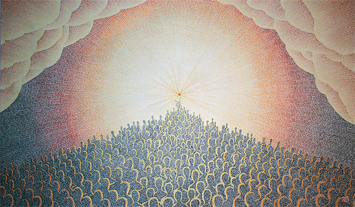
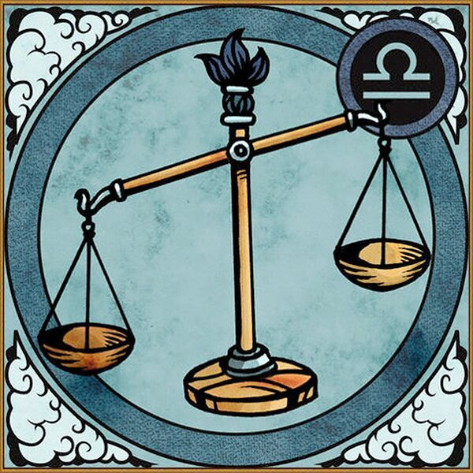

Релятивизм (от лат. relativus — относительный) — методологический принцип, состоящий в абсолютизации относительности и условности содержания познания. Релятивизм происходит из одностороннего подчёркивания постоянной изменчивости действительности и отрицания относительной устойчивости вещей и явлений. Гносеологические корни релятивизма — отказ от признания преемственности в развитии знания, преувеличение зависимости процесса познания от его условий (например, от биологических потребностей субъекта, его психического состояния или наличных логических форм и теоретических средств). Факт развития познания, в ходе которого преодолевается любой достигнутый уровень знания, релятивисты рассматривают как доказательство его неистинности, субъективности, что приводит к отрицанию объективности познания вообще, к агностицизму. Релятивизм как методологическая установка восходит к учению древнегреческих софистов: из тезиса Протагора «человек есть мера всех вещей…» следует признание основой познания только текучей чувственности, не отражающей каких-либо объективных и устойчивых явлений.
Под социально-культурным релятивизмом понимается выделение своеобразия и изменчивости (общественной, лингвистической и культурной) любой социальной системы на протяжении ее исторического развития, а также ее замкнутость и непохожесть на другие социальные системы. Эта разновидность релятивизма основана на отрицании линейного развития культуры и базируется на представлениях о существовании несоизмеримых мировоззренческих типов, свойственных определенным культурам в определенный временной период.
Последователи морального релятивизма отрицают абсолютный характер, вместе с ним отрицая всеобщий и принудительный характер моральных норм, считая мораль условным и ситуативным понятием. Для носителей подобного мировоззрения характерно желание подчинить мораль собственным пристрастиям (что может выражаться в крайних формах гедонизма) либо общественной целесообразности.
Негативный релятивизм близок учению софистов, поскольку строится на утверждении об отсутствии истины в любом высказанном человеком суждении.
Лучшим выражением взглядов последователей формального релятивизма является привычная всем стандартная фраза «в этом есть доля истины». Сторонники данной концепции верят в существование неких «правды» и «истины», в настоящее время недоступных пониманию людей по причине ограниченности их способностей к познанию. А потому любое суждение не способно отразить всю полноту истины, выражая ее лишь частично. Такие убеждения, основанные на неполноте знаний человека о мире, чаще всего свойственны ученым, высказывающим предположения о возможности преодоления этой неполноты посредством построения единственно правильной общей теории познания.
Прагматичный релятивизм рассматривает все имеющиеся в мире философские концепции как равноправные учения, поскольку отрицает саму возможность рационально сравнить их, выбрав из предложенных наиболее правильную и верную. К тому же, у всякой концепции есть авторы и сторонники, следовательно, данное учение соответствует определенным целям, а потому может помочь людям решить стоящие перед ними мировоззренческие и познавательные задачи.
Отдельно сейчас выделяют и постмодернистский релятивизм, который является логическим продолжением негативного релятивизма, но отличается от него большей глубиной и отсутствием примитивизма. Так, представители указанного течения никогда не отрицали саму возможность познания, но не соглашались с монистической формой познавательного процесса, сложившейся за много веков. Помимо этого, ими отрицаются необходимость и возможность выстраивания любых систем познания, да и целостной философской системы в принципе. Постмодернисты являются последовательными противниками догм, их воззрения основаны на необходимости постепенного движения к познанию.
Анархический релятивизм родственен постмодерну, его главный тезис можно выразить формулой «позволено все». Также в своих взглядах последователи данного учения пересекаются со сторонниками прагматичного релятивизма, полагая, что всякий существующий в мире предмет имеет собственное предназначение. Главным выразителем подобных идей стал австрийско-американский учёный, философ Пол Фейерабенд (1924 — 1994), считавший, что любая приходящая в голову человека мысль непременно соответствует чему-либо в реальности.
Абсолютный релятивизм во многом является логическим продолжением и развитием описанной нами выше анархической концепции. Последователи данной теории не отрицают объективность процесса познания, они не ссылаются на невозможность полного познания, но стремятся к полноте понимания явлений и предметов, для чего рассматривают их комплексно, с различных позиций, считая каждую из них полноценной и равноправной.